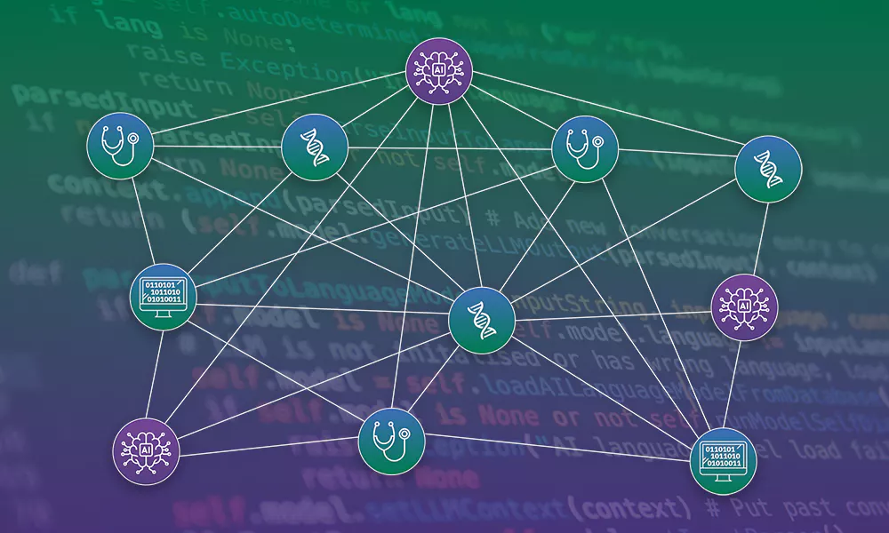

BioChatter: haciendo que los modelos de lenguaje grandes sean accesibles para la investigación biomédica
Presentando un marco de trabajo de código abierto para la investigación biomédica personalizada

Resumen
- BioChatter es un marco de trabajo en Python, de código abierto, para emplear modelos de lenguaje grandes (LLMs) en investigación biomédica.
- BioChatter puede facilitar la creación de soluciones basadas en LLM para casos de uso específicos en biomedicina.
- Las soluciones de inteligencia artificial (IA) construidas con BioChatter pueden agilizar los flujos de trabajo de investigadores sin formación en computación, beneficiando áreas como la medicina personalizada y el descubrimiento de fármacos.
Los modelos de lenguaje grandes (LLMs, por sus siglas en inglés) han transformado la forma en que muchos de nosotros trabajamos, desde ayudar en la creación de contenido y programación hasta mejorar los motores de búsqueda. Sin embargo, la falta de transparencia, reproducibilidad y personalización de estos modelos continúa siendo un desafío que limita su uso generalizado en la investigación biomédica.
¿Qué son los modelos de lenguaje grandes (LLMs)?
Los LLMs son sistemas de inteligencia artificial diseñados para procesar y generar texto de manera similar a como lo haría un ser humano, utilizando enormes cantidades de datos de entrenamiento. Son capaces de realizar tareas como generación de texto, traducción de idiomas, resumir información, responder preguntas y más.
Para los investigadores biomédicos, optimizar LLMs para una pregunta de investigación específica puede resultar complicado, ya que requiere conocimientos de programación y aprendizaje automático. Estas barreras han reducido el uso de los LLMs en diversas tareas de investigación, incluyendo extracción y análisis de datos.
Una nueva publicación en Nature Biotechnology presenta BioChatter como una herramienta para superar estas limitaciones. BioChatter es un marco de trabajo en Python y de código abierto que permite implementar LLMs en la investigación biomédica, siguiendo los principios de la ciencia abierta. Para abordar las preocupaciones sobre privacidad y reproducibilidad que a menudo surgen con los modelos comerciales, BioChatter ofrece un marco para quienes buscan transparencia y flexibilidad en sus flujos de trabajo de LLM.
“Los modelos de lenguaje grandes tienen un potencial enorme para transformar la investigación biomédica, al facilitar tareas complejas de análisis de datos,” comentó Julio Saez-Rodriguez, Director de Investigación en el Instituto Europeo de Bioinformática de EMBL (EMBL-EBI) y Profesor en excedencia en la Universidad de Heidelberg. “Sin embargo, para aprovechar esta tecnología al máximo, necesitamos herramientas que prioricen la transparencia y la reproducibilidad. BioChatter llena este vacío, permitiendo a los investigadores integrar las capacidades de los LLM en numerosas tareas biomédicas.”
Interfaz con grafos de conocimiento biomédicos y software
BioChatter se puede adaptar a áreas de investigación específicas para extraer datos de bases biomédicas y literatura. Además, al instruir a los LLM para que utilicen software externo a través de la funcionalidad de llamadas a API (API-calling) de BioChatter, se facilita el acceso en tiempo real a información actualizada y la integración con herramientas de bioinformática.
Una característica clave de BioChatter es su capacidad de integrarse con los grafos de conocimiento construidos por BioCypher. Estos grafos enlazan datos biomédicos como mutaciones genéticas, asociaciones fármaco-enfermedad y otra información clínica. De esta forma, se pueden analizar conjuntos de datos complejos para identificar variaciones genéticas en enfermedades o comprender los mecanismos de acción de fármacos.
“BioChatter está diseñado para reducir las barreras de uso de modelos de lenguaje grandes en la investigación biomédica, ofreciendo un marco abierto y transparente que puede adaptarse a diversas necesidades,” explicó Sebastian Lobentanzer, investigador postdoctoral en el Hospital Universitario de Heidelberg y futuro investigador principal en Helmholtz Munich. “Nuestro objetivo es que los científicos se centren en su investigación y dejen las complejidades técnicas en manos de la plataforma.”
Aplicaciones reales
El siguiente paso para BioChatter es probar su integración en bases de datos de ciencias de la vida. El equipo detrás de BioChatter está colaborando estrechamente con Open Targets, una asociación público-privada que incluye a EMBL-EBI y que utiliza datos de genética y genómica humana para la identificación y priorización sistemática de dianas terapéuticas. Al integrar BioChatter en la plataforma de Open Targets, se podría optimizar el acceso y uso de los datos biomédicos por parte de los usuarios.
El equipo también está desarrollando BioGather, un sistema complementario diseñado para extraer información de otros tipos de datos clínicos, como genómica, notas médicas e imágenes. Al ayudar a analizar y alinear estos datos, BioGather facilitará la investigación de problemas complejos en medicina personalizada, modelado de enfermedades y desarrollo de fármacos.
Financiación
Este trabajo ha sido apoyado por fondos de la Unión Europea a través del acuerdo de subvención Nº 101057619 y de la Secretaría de Estado de Educación, Investigación e Innovación de Suiza (SERI) bajo el contrato Nº 22.00115 (JB). Además, por el programa de investigación e innovación Horizonte 2020 de la Unión Europea bajo el acuerdo Nº 965193 para DECIDER (JSR), y por las becas U54AG075931 y R01DK138504 de los Institutos Nacionales de la Salud (NIH), así como por el Pelotonia Institute for Immuno-Oncology (QM).
Artículo original
A platform for the biomedical application of large language models
Lobentanzer S., et al.
Nature Biotechnology, 22 de enero de 2025
doi: 10.1038/s41587-024-02534-3
Etiquetas: inteligencia artificial, bioinformática, biomédica, embl-ebi, modelos de lenguaje grandes, open targets
Nota: Este texto ha sido traducido y adaptado al español para brindar una explicación clara y amigable a quienes deseen entender el propósito e importancia de BioChatter en la investigación biomédica. El texto original en inglés está adaptado de la [nota de prensa del EMBL-EBI](https://medicalxpress.com/news/2025-01-biochatter-large-language-accessible-biomedical.html
https://www.ebi.ac.uk/about/news/research-highlights/biochatter-making-large-language-models-accessible-for-biomedical-research/
https://bioengineer.org/biochatter-unlocking-access-to-large-language-models-for-biomedical-research/?fsp_sid=1499
These are some of the press releases 🙂)